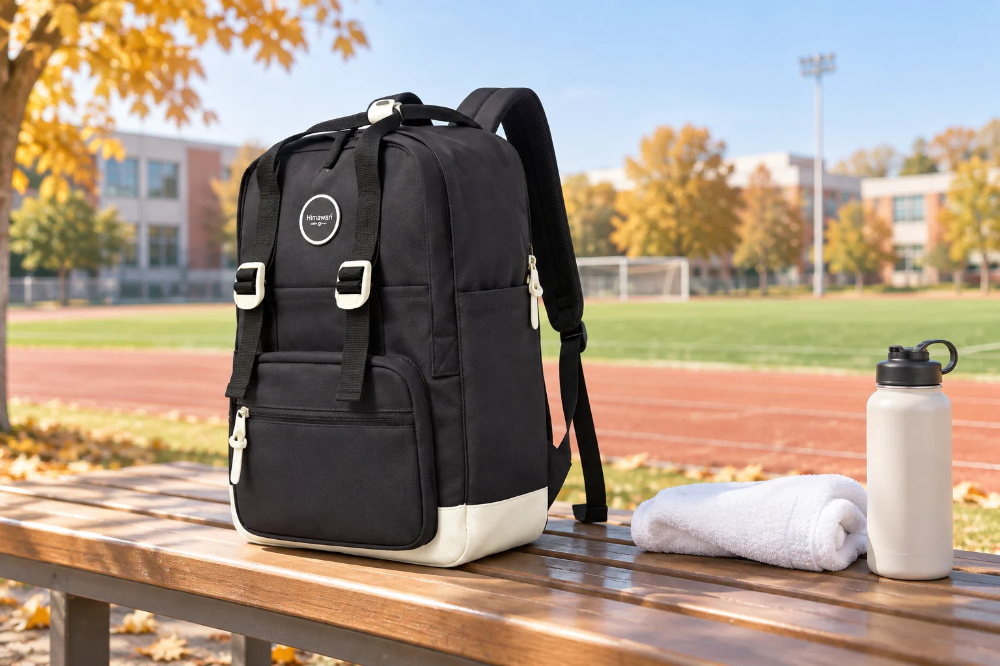

학교 체육행사 날의 백팩: 운동장에 나가기 전부터 돌아올 때까지

체육행사가 있는 날에는 평소 책과 필기구에 운동화, 여벌 양말, 물병 같은 물건이 더해질 수 있습니다. 출발할 때 모두 담았더라도 운동장에서 필요한 물건을 꺼내지 못하거나, 돌아올 때 사용한 물건을 깨끗한 것과 다시 섞으면 불편합니다. 학교 안내문과 실제 일정에 맞춰 평소 수업 짐과 활동 짐을 나누어 준비해 보세요. 특별한 가방을 새로 사기보다 지금 쓰는 백팩의 자리를 다르게 정하는 일부터 시작할 수 있습니다.
안내문에서 평소와 다른 준비물만 표시합니다
먼저 학교가 안내한 장소, 활동, 준비물, 물품 반입 규칙을 확인하세요. 평소 가져가는 책과 필통은 그대로 두고, 행사 때문에 추가되는 물건에 표시를 합니다. 보조 신발이 필요한지, 간식이나 개인 물병을 가져갈 수 있는지처럼 학교마다 다른 항목은 일반적인 목록으로 대신할 수 없습니다. 아이가 직접 확인할 수 있도록 추가 물건을 한 묶음으로 놓고, 이름표가 필요한 물건은 전날 붙여둡니다.
운동장에서 먼저 쓸 물건은 한곳에 둡니다
운동장에 나가서 가장 먼저 찾을 물건을 가방 맨 아래로 밀어 넣지 마세요. 손수건이나 모자, 허용된 개인 물병처럼 자주 꺼낼 것을 닫히는 포켓이나 별도 파우치 한곳에 모읍니다. 물병은 뚜껑을 잠가 세운 상태로 넣고 종이류와 떨어뜨립니다. 가방 포켓의 크기와 깊이가 실제 용기에 맞는지 집에서 직접 확인하세요. 사진 속 소품이 특정 제품에 모두 들어간다는 뜻은 아닙니다.
사용한 물건이 돌아올 자리를 비워둡니다
여벌 양말이나 작은 수건을 가져간다면 돌아오는 길에 사용한 것의 상태가 달라집니다. 깨끗한 교재나 전자기기와 닿지 않도록 닫히는 별도 주머니를 준비하고, 젖거나 흙이 묻은 물건은 귀가 후 바로 꺼내 확인합니다. 가방 속 공간을 출발할 때 꽉 채우면 되담기가 어려워집니다. 행사 후 배부되는 종이나 개인 물건이 생길 수 있으니 접히지 않을 자리도 조금 남겨두세요.
교실로 돌아오는 동선을 한 번 떠올립니다
행사장에서는 잠깐 벗어 둔 가방과 외투, 물병의 위치가 달라질 수 있습니다. 학교의 보관 지침을 따르고 가방을 통로나 출입구에 두지 않습니다. 활동이 끝나면 주변 바닥, 앉았던 자리, 물병을 놓았던 곳을 짧게 돌아보고 교실로 이동하세요. 다른 사람의 물건과 헷갈리기 쉬운 날에는 가방 안쪽의 이름 표시가 도움이 되지만, 밖에 개인정보가 크게 드러나지 않게 주의합니다.
평소 책가방을 그대로 쓴다면
대표 사진은 실제 Himawari No.1088M 블랙의 외형을 참조한 학교 운동장 연출 이미지입니다. 체육행사 전용 사양이나 수납량을 보여주는 사진은 아닙니다. 평소 책가방을 그대로 사용하는 경우에도 그날 필요 없는 교재를 뺄 수 있는지 시간표를 먼저 확인하세요. 준비물을 더할수록 끈 길이와 무게 균형이 달라지므로 실제 내용물을 넣고 짧게 메어 보며 조절합니다. 끝난 날에는 가방을 비워 젖거나 오염된 곳이 없는지 확인하세요.
참고·안내
- Himawari No.1088M 제품 정보
- 실제 Himawari No.1088M 블랙 제품 사진을 참조해 만든 AI 연출 이미지입니다. 주변의 수건·물병은 제품 구성품이 아니며 수납 성능을 나타내지 않습니다.
자주 묻는 질문
체육행사 날에는 책가방 대신 큰 가방이 필요한가요?
학교 안내와 그날의 준비물을 먼저 확인하세요. 평소 가방에 무리 없이 담기고 아이가 스스로 꺼낼 수 있다면 크기만 키울 필요는 없습니다.
사용한 수건은 어디에 넣어야 하나요?
깨끗한 책이나 전자기기와 분리된 닫히는 주머니에 임시로 넣고, 집에 돌아와 바로 꺼내 상태를 확인하세요.